chapter8 - section1
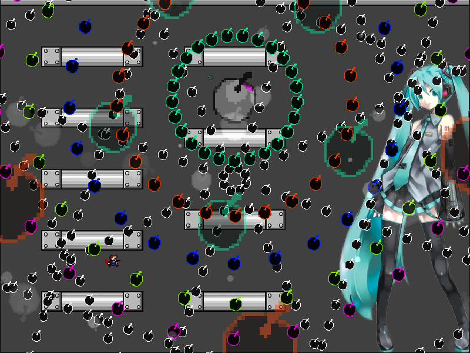
| creator | segment | label | jump |
|---|---|---|---|
| NN | 1:40.40~1:42.40 | Q+R*A/P | double |
判定抜けを題材とした角度と回転方向がランダムな弾幕です。
1:40.80~1:41.80において画面上部を中心として回転する同心円状弾幕（方向数5）に関して、これらはそれぞれの層について回転方向が互い違いになるように回転しています（fig.8-1.1.a~fig.8-1.1.e）。
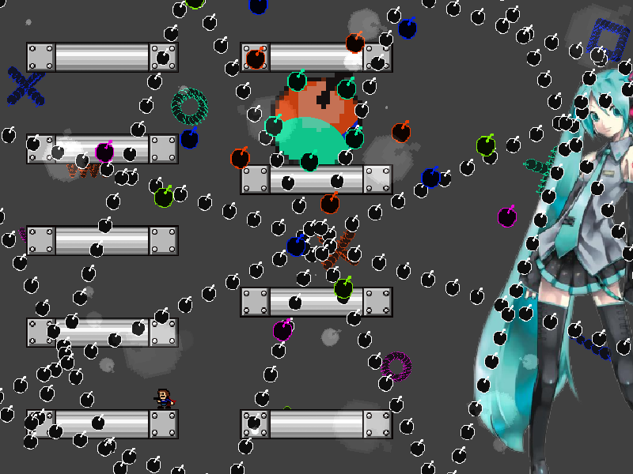
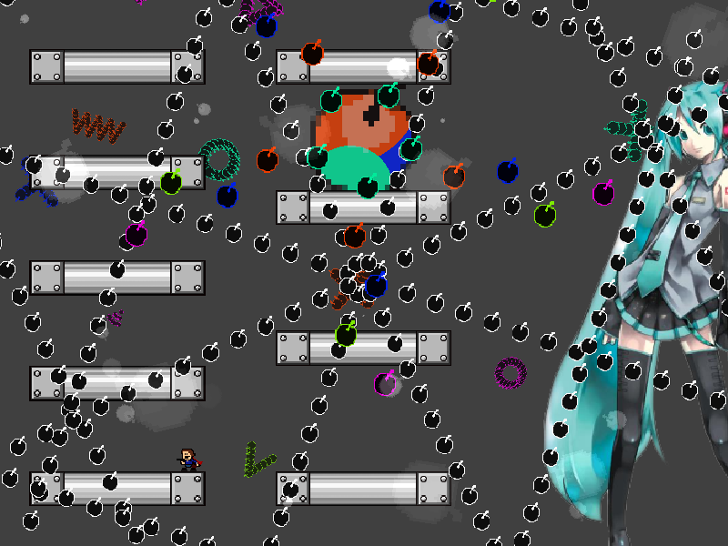
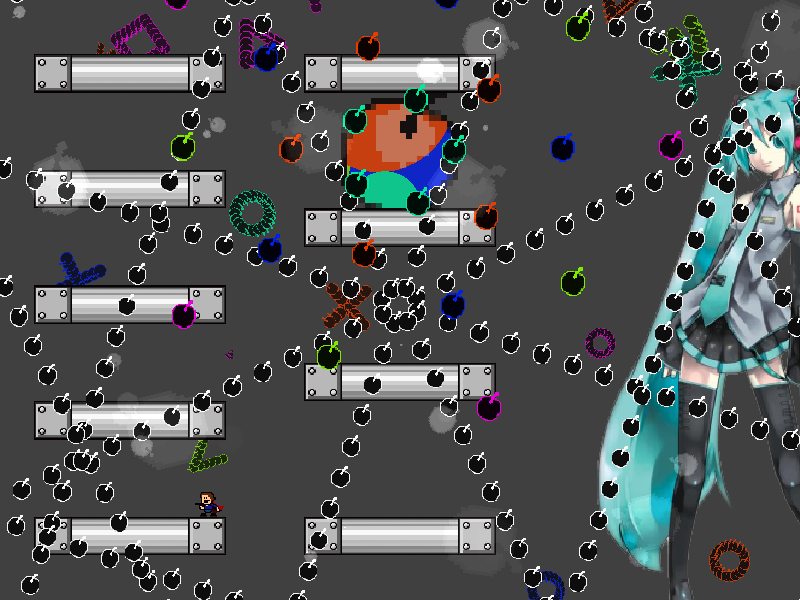
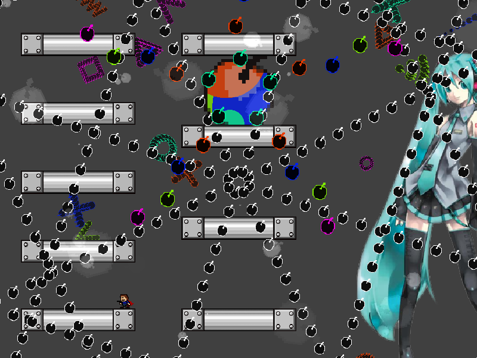
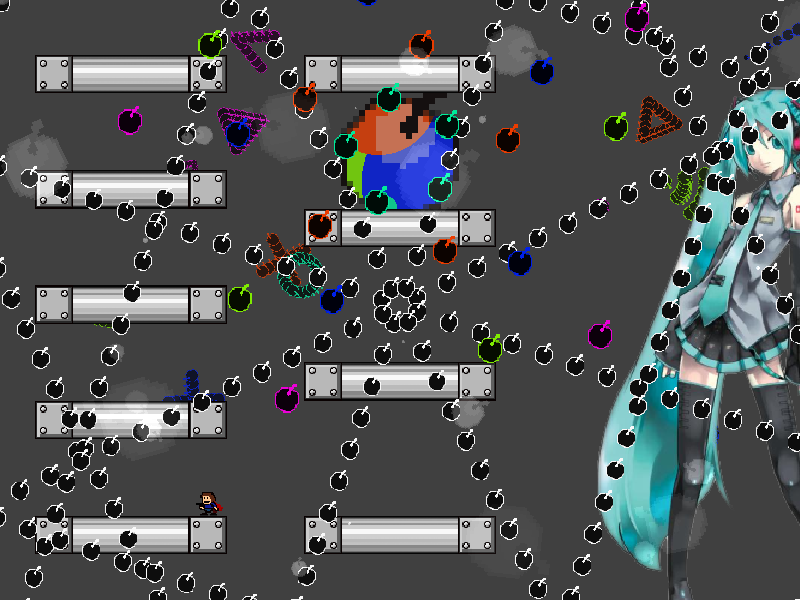
これらの同心円状弾幕の動きによって、1:41.80において画面上部を中心として生成される同心円状弾幕（方向数25）の角度（fig.8-1.2）を予測することができます。

以下、具体的にどのような考えに基づいて判断すればよいかを記載します。
例として、fig.8-1.3.aおよびfig.8-1.3.bに示すような、5方向に広がる円形弾幕が単位時間当たり36°ずつ回転している状況を考えます。
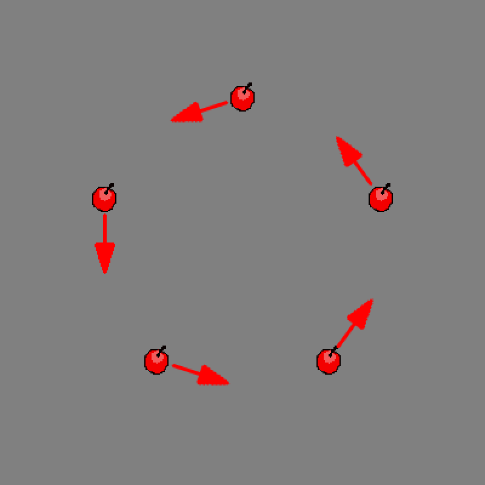
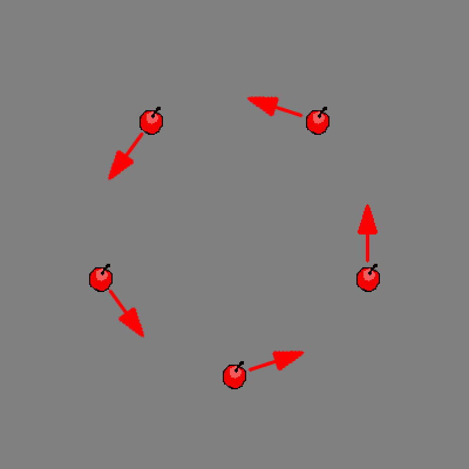
この状況は、見方を変えればfig.8-1.4.aおよびfig.8-1.4.bに示すように、10方向に広がる円形弾幕に関して各時刻において等間隔に位置する5つずつの弾がそれぞれ実体化と透明化を繰り返しているとみなすことができます。
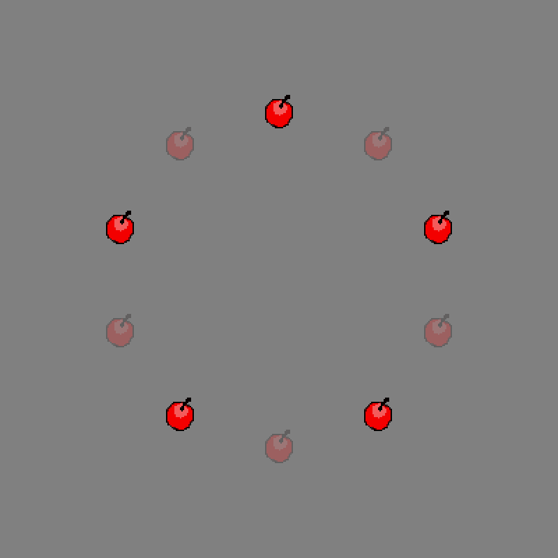
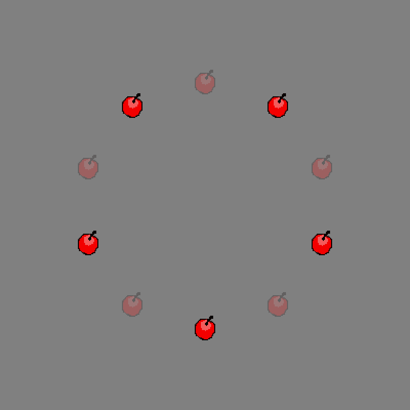
したがって、この状況においてこれらの半径が拡大する場合を考えると、その角度がfig.8-1.3.aとfig.8-1.3.bのどちらの状態にあるかに関わらず完全に回避するためには、fig.8-1.5に示す角度を狙えばよいということになります。
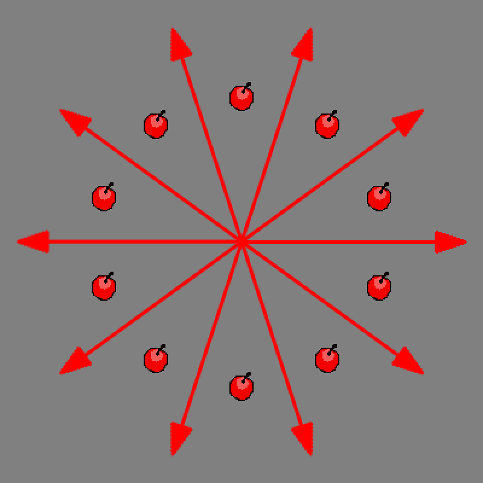
この考え方を応用して、1:40.80~1:41.80において高速で回転する同心円状弾幕（fig.8-1.1.a~fig.8-1.1.e）を、各層に関してそれぞれ25方向に広がる円形弾幕とみなし、そのすべてを完全に回避するために必要な動きをすることによって、1:41.80において画面上部を中心として生成される同心円状弾幕を回避することができます（fig.8-1.2）。
なお、先の例と異なり、実際には単位時間当たりの回転角度が±14.15°であることから、ある時刻における形状が5step前のものと完全に一致せず（そのためには単位時間当たりの回転角度が±14.4°である必要がある）、その差分が方向数25とみなした円形弾幕の回転として表れているということに注意が必要です。